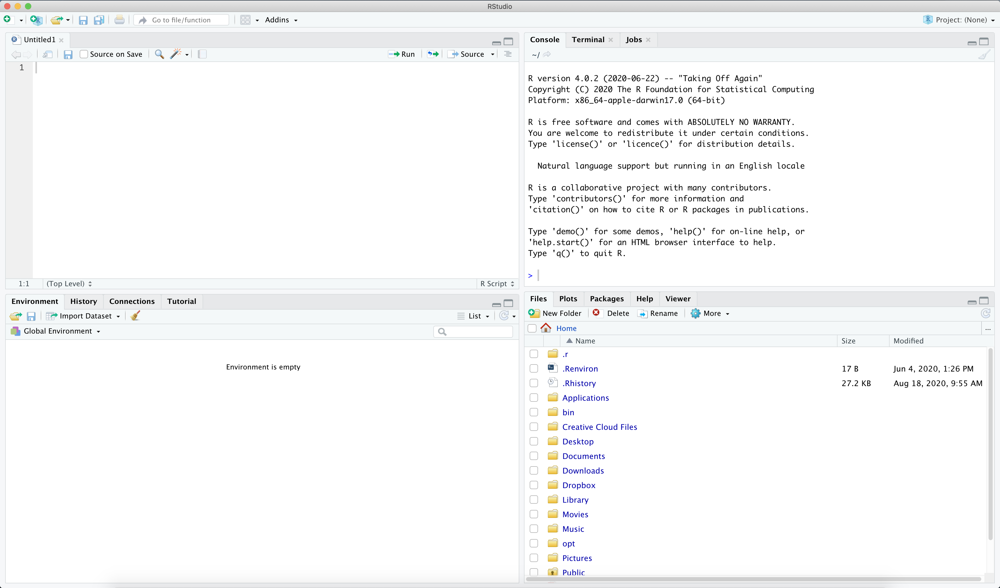

2 + 4 + 4## [1] 105 * 4## [1] 2020 / 4## [1] 55^0.5 # astmesse 0.5 tõstmine on sama, mis ruutjuure võtmine## [1] 2.236068Statistiline analüüs tähendab ühel või teisel viisil arvudega toimingute tegemist ning R on programmeerimiskeel, mis on loodud just sellel eesmärgil. R-i õppimine tähendab, et me peame selgeks saama teatud käsud ja nende ütlemise viisid, millega R teeb andmetega just seda, mida me soovime.
Kindlasti on lihtsamaid viise statistika tegemiseks — näiteks programmid, kus saab käske anda hiirenupu vajutustega, valides eelnevalt defineeritud toimingute hulgast. Kuid sellised oskused ei vii kaugele. Nad ei aita sul teha oma tööd kiiresti ja korratavalt.
R on tasuta ja avatud tarkvara, millel on väga suur ja aktiivne kasutajate ning arendajate kogukond. Sa võid kindel olla, et R-ga saab teha enamikke analüüse kõige ajakohasematel viisidel. Ning isegi kui mõni tehnika on puudu — kuna tegemist on programmeerimiskeelega, saab iga kasutaja selle ise juurde luua.
Miks R?
Kõige olulisem neist on analüüsipäevik. Kui sa teed oma analüüsi hiireklõpsudega, siis kolme kuu pärast ei tea sa enam, mida sa täpselt tegid, ega oska seda korrata. Kui sa teed ta koodiga, siis on kõik kirjas. Samuti teeb see sinu analüüsi teistele läbipaistvaks - on võimalik samm-sammult näha, mida sa oma andmetega oled teinud ja kuidas oma tulemusteni jõudnud.
R on lihtsalt programmeerimiskeel. RStudio on programm, mis teeb R-ga töötamise kiireks ja mugavaks. Ta pakub kasutajaliidese, kus on korraga aken, kuhu saab kirjutada ja salvestada R-i käske, ning aken, kus näeb nende käskude väljundit. Lisaks teeb RStudio lihtsaks andmete haldamise, jooniste kuvamise ja abi otsimise.
RStudio on samuti tasuta ning tal on palju laiendusi: R Markdown ja Quarto, ettekanded, interaktiivsed veebilehed (Shiny) ja palju muud.
Sul on vaja installeerida kaks programmi.
Kui sa oled R-i ja RStudio juba mõnda aega tagasi installeerinud, siis hoolitse selle eest, et nad oleks värskendatud. Vanade versioonidega tekib arusaamatuid probleeme, mida uuemas versioonis lihtsalt ei ole.
Kui sa avad RStudio, näeb ta umbes selline välja:

Enne kui midagi kirjutama hakkame või pikemalt R-i ja RStudiosse süveneme, teeme ühe asja korralikult ära.
Iga analüüs peaks elama omaenda kaustas koos oma andmete, koodi ja tulemustega. RStudios tehakse see nii, et luuakse projekt: File → New Project → New Directory → New Project. Anna talle nimi (näiteks statanal) ja vali koht, kuhu ta läheb.
Mis siis juhtub? RStudio teeb kausta ja sinna sisse faili laiendiga .Rproj. Kui sa edaspidi avad R-i selle faili kaudu, siis teab R automaatselt, kus su asjad on. Sa saad viidata failidele nii: "data/ess11_ee_raw.sav" — ja see töötab.
Vanemates materjalides ja vanemates R-i õpikutes õpetatakse töökausta määrama käsuga
setwd("C:/Users/marti/Desktop/..."). Pigem ära tee seda. Selline rida töötab ainult sinu arvutis. Kui sa saadad oma koodi kellelegi teisele — näiteks juhendajale — siis tema arvutis ta ei tööta. Projekt lahendab selle probleemi ära.
Loo projekti sisse (projekti kausta) kaks alamkausta: data andmete jaoks ja R koodifailide jaoks.
Nüüd tekita uus koodifail: File → New File → R Script. Siia kirjutad sa käsud, mida R peaks täitma.
Oleks hea, kui sa kasutad kogu praktikumide vältel ühte sellist koodifaili, sest järgnevatel kordadel jätkame sealt, kus pooleli jäime.
Konsool ja tekstiredaktor on RStudio kaks kõige olulisemat akent. Tekstiredaktoris kirjutad koodi, konsoolis näed selle väljundit.
Mõned seaded, mis teevad elu lihtsamaks:
Tools → Global Options → Code → Editing → Soft wrap R source files — tee siia linnuke. See hoiab pikad koodiread ekraani piires.Tools → Global Options → Appearance — vali endale sobiv välimus ja kirjasuurus.Klahvikombinatsioonid (Windows, sulgudes macOS):
| Kombinatsioon | Mida teeb |
|---|---|
| Ctrl+Enter (Cmd+Enter) | jooksuta rida, kus kursor on |
| Ctrl+Shift+M (Cmd+Shift+M) | sisesta toru (peagi räägime pikemalt, mida see tähendab) |
| Ctrl+D (Cmd+D) | kustuta rida |
| Ctrl+I (Cmd+I) | korrasta koodi taandeid (aitab teha koodi ilusamaks ja loetavamaks) |
| Alt+Shift+K (Option+Shift+K) | näita kõiki kiirvalikuid |
Mida R-i kohta teada:
Kõige lihtsamal tasandil võib R-st mõelda kui kalkulaatorist. Sümbolid + - / * töötavad nii, nagu võiks oodata. Katusmärk ^ tõstab astmesse.
2 + 4 + 4## [1] 105 * 4## [1] 2020 / 4## [1] 55^0.5 # astmesse 0.5 tõstmine on sama, mis ruutjuure võtmine## [1] 2.236068Märk # alustab kommentaari. R saab aru, et sellest märgist edasi ei ole enam koodi, ja jätab ülejäänud rea vahele. Nii saab endale märkmeid jätta.
Kommenteeri oma koodi. Sa kirjutad neid kommentaare iseendale kolme kuu pärast, kes ei mäleta sellest kõigest enam midagi. Või kui sa peaksid kunagi oma koodi jagama, siis on need juhised kellelegi teisele selle kohta, mida ja miks sa täpselt oled teinud.
Funktsioonid on käsud, mis teevad neile antud andmetega midagi. Grammatika on alati sama: esmalt funktsiooni nimi, siis sulgudes andmed ning vajadusel täiendavad argumendid, mis on omavahel komadega eraldatud ja millele antakse väärtus võrdusmärgiga.
Näiteks funktsioon log() võtab arvust logaritmi. Ilma täiendavate argumentideta võtab ta naturaallogaritmi; argumendiga base saab öelda, millise alusega logaritmi tahad.
log(10)## [1] 2.302585log(10, base = 10)## [1] 1Abi saamiseks kirjuta funktsiooni nime ette küsimärk: ?log. Sama teeb funktsioon help().
Objekti loomiseks kasutatakse märki <-, mida loetakse “saab väärtuseks”.
x1 <- 4 + 1
x1## [1] 5Kui tahad näha, mis on objekti sees, kirjuta lihtsalt tema nimi. Töökeskkonnas olevaid objekte näed RStudio aknas “Environment”.
R-is on kaks viisi väärtuse andmiseks:
<-ja=. Kasuta objektide loomiseks alati<-ja jäta=funktsioonide argumentide jaoks. Nii on kohe näha, kumb on kumb.
Vektor on väärtuste jada, kus igal väärtusel on oma asukohanumber. Vektori tekitamiseks kasuta funktsiooni c() (combine).
x1 <- c(x1, 2)
x1## [1] 5 2x3 <- c(x1, 6, 9, 11, 15)
x3## [1] 5 2 6 9 11 15Teatud toiminguid saab teha kõikide elementidega korraga.
x3 / 3## [1] 1.6666667 0.6666667 2.0000000 3.0000000 3.6666667 5.0000000x3 + 1## [1] 6 3 7 10 12 16Vektori peal saab kasutada funktsioone, mis teevad midagi kõikide väärtustega korraga. Mõned kõige sagedamini vajaminevad:
mean() — aritmeetiline keskmine;sum() — kõikide väärtuste summa;length() — elementide arv;round() — ümardamine. Teine argument ütleb, mitu kohta pärast koma alles jätta.mean(x3)## [1] 8sum(x3)## [1] 48length(x3)## [1] 6round(mean(x3), 2)## [1] 8Vektorid ei pea sisaldama ainult numbreid.
Funktsioon class() ütleb, mis tüüpi objektiga on tegemist. Seda funktsiooni läheb sul väga tihti vaja — suur osa segastest veateadetest tuleb sellest, et objekt ei ole seda tüüpi, mida sa arvasid.
rahvus <- c("eestlane", "prantslane", "sakslane", "prantslane", "soomlane")
rahvus## [1] "eestlane" "prantslane" "sakslane" "prantslane" "soomlane"class(rahvus)## [1] "character"Siin on tegemist tekstilise vektoriga.
Jutumärkide reegel. R keeles tähistavad jutumärgid tekstilisi andmeid. Ilma jutumärkideta viitad sa R-i käskudele ja töökeskkonnas olevatele objektidele. See vahe on oluline ja seda unustatakse pidevalt.
Kategoorilised muutujad on R-is tavaliselt salvestatud faktoritena.
Faktor on R-i andmetüüp kategoorilise muutuja jaoks. Kategooriaid tähistavad arvulised väärtused ja igal kategoorial on oma silt.
Tekstilisest vektorist saab faktori funktsiooniga factor(). Faktori kategooriaid näitab funktsioon levels().
rahvus <- factor(rahvus)
class(rahvus)## [1] "factor"levels(rahvus)## [1] "eestlane" "prantslane" "sakslane" "soomlane"Pane tähele, et kategooriad on vaikimisi tähestikulises järjekorras — see järjekord on hiljem oluline nii joonistel kui mudelites. Vaatame hiljem ka seda, kuidas seda järjekorda muuta.
Igal väärtusel on oma asukoht ehk indeks, millele saab viidata nurksulgudega.
x3## [1] 5 2 6 9 11 15x3[2] # teisel kohal asuv väärtus## [1] 2x3[2] <- 32 # asendamine
x3## [1] 5 32 6 9 11 15Puuduv väärtus on mõõtmine, mis ei andnud tulemust — näiteks kui küsitletav jättis mõnele küsimusele vastamata. R tähistab neid tähepaariga NA.
x3[1] <- NA
x3## [1] NA 32 6 9 11 15mean(x3)## [1] NAVastus on NA. See ei ole viga — see on R, kes tuletab sulle meelde, et andmed on puudulikud. Kui sa tahad puuduvad väärtused arvutusest välja jätta, pead seda eraldi ütlema argumendiga na.rm = TRUE.
mean(x3, na.rm = TRUE)## [1] 14.6Funktsioon na.omit() eemaldab puuduvad väärtused.
na.omit(x3)## [1] 32 6 9 11 15
## attr(,"na.action")
## [1] 1
## attr(,"class")
## [1] "omit"Pane tähele:
na.omit()ei muuda objekti sisu, ta ainult kuvab tulemuse. Kui tahad muudatust alles hoida, pead ta uude objekti panema.
Andmetabel (data frame) sisaldab mitut sama pikkusega vektorit, mis võivad olla erinevat tüüpi. See on kõige tüüpilisem andmeformaat.
Andmetabeli loomiseks on funktsioon data.frame(). Iga argument on üks veerg ning argumendi nimi saab veeru nimeks.
vanus <- c(34, 51, 28, 45, 62)
data1 <- data.frame(rahvus = rahvus, vanus = vanus)
data1## rahvus vanus
## 1 eestlane 34
## 2 prantslane 51
## 3 sakslane 28
## 4 prantslane 45
## 5 soomlane 62Andmetabel on kahemõõtmeline: tal on read ja veerud. Tavaliselt on andmed struktureeritud nii - read on juhtumid, veerud on muutujad.
Veergude nimesid saab vaadata ja muuta funktsiooniga names().
names(data1)## [1] "rahvus" "vanus"Andmete kätte saamiseks andmetabelist tuleb viidata kahele indeksile: esmalt reale, siis veerule.
data1[2, 1] # teine rida, esimene veerg## [1] prantslane
## Levels: eestlane prantslane sakslane soomlanedata1[, 1] # kogu esimene veerg## [1] eestlane prantslane sakslane prantslane soomlane
## Levels: eestlane prantslane sakslane soomlanedata1[2, ] # kogu teine rida## rahvus vanus
## 2 prantslane 51Kõigepealt read, siis veerud. Read on esimene mõõde, veerud teine. Jäta see meelde — sa kasutad seda pidevalt.
Veerule saab viidata ka dollarimärgiga, kasutades veeru nimetust (andmetabelis on tavaliselt veergudel - muutujatel - nimed).
data1$vanus## [1] 34 51 28 45 62Nimekiri (list) on samuti andmete jada, kuid iga element võib olla erinevat laadi andmestruktuur — üksik väärtus, vektor või terve andmetabel. Nimekirja loomiseks on funktsioon list(), mis töötab nagu c(), ainult et ei nõua elementidelt ühesugust tüüpi.
nimek <- list(10, x3, data1)Elementidele viitamiseks kasuta topelt nurksulge.
nimek[[1]]## [1] 10Nimekirju sa ise eriti tegema ei hakka, aga sa kohtad neid pidevalt: näiteks mudelite tulemused on R-is nimekirjad. Sellepärast on kasulik teada, kuidas nad käituvad.
R tuleb suure hulga baasfunktsionaalsusega, millest paljude analüüside jaoks ei piisa. R-l on aga tuhandeid lisapakette, mis tema võimalusi laiendavad.
Paketi paigaldamiseks kasuta install.packages() — paketi nimi käib jutumärkides.
install.packages("ggplot2")Paigaldatud paketi laadimiseks kasuta library() — siin ilma jutumärkideta.
library(ggplot2)Paigaldama pead sa paketi üks kord. Laadima pead sa ta iga kord, kui sa R-i uuesti avad. Seetõttu käivad
library()käsud koodifaili algusesse jainstall.packages()käske koodifailis üldiselt ei hoita.
Koodifail võiks olla üles ehitatud alati ühtemoodi. “Majapidamistööd” — pakettide laadimine ja andmete sisse lugemine — käivad faili algusesse.
Järgnev näide on mõeldud ainult kuju näitamiseks. Andmete laadimise funktsiooniga load() tegeleme järgmises praktikumis — praegu vaata lihtsalt, mis järjekorras asjad failis olema peaksid.
# Pakettide laadimine
library(haven)
library(dplyr)
library(ggplot2)
# Andmete laadimine
load("data/ess11_ee_clean.rdata")
# Andmehaldus
# Analüüsid
# JoonisedSuuremate tööde puhul jaga oma töö mitme faili vahel: ühes tegeled andmetega, teises analüüsidega, kolmandas joonistega. Just nii on üles ehitatud ka need materjalid.
help() või küsimärk funktsiooni nime ees, näiteks ?mean.Suured keelemudelid — ChatGPT, Claude, Copilot, Gemini — oskavad R-i hästi. Nad on abiks siis, kui sul on konkreetne ja piiritletud probleem:
Selles on nad head ja seda tasub ka vajadusel kasutada.
Aga miks ei ole see hea esimene kokkupuude statistilise kodeerimisega?
Sellepärast, et keelemudel annab sulle usutava koodi ka siis, kui see analüüs on sinu andmete jaoks vale. Ta ei tea, mis skaalal su muutuja on. Ta ei tea, et sa arvutad keskmist muutujast, kus osa väärtusi tähendab tegelikult “ei oska öelda”. Ta ei tea, et su mudelist kadus vaikselt kolmandik juhtumitest.
Kood jookseb läbi. Tuleb arv. Arv on vale.
Sa ei suuda seda märgata enne, kui sa oskad koodi ise lugeda ja tead, mida see analüüs eeldab. Just seda me sellel kursusel ehitamegi. Kui vundament on olemas, siis on keelemudel suurepärane tööriist, mis säästab sulle tunde. Enne seda on ta masin, mis toodab enesekindlalt esitatud vigu või analüüse, mis ei ole päris sellised nagu nad olema peaksid. Kui sul endal teadmised puuduvad, siis ei ole sa võimeline ka keelemudeli tulemusi hindama. Sa oled pimesi temast sõltuv ja sinu enda teadmised ja oskused ei arene. Kui kõik kood ja kogu analüüsiloogika aga ise läbi mõelda, siis oled sa keelemudelile võrdsem vesltuspartner ning oled võimeline looma koostöö, mis ka sind ennast arendab ja mis aitab sul teha paremaid analüüse.
Tartu Ülikoolil on tehisintellekti kasutamise kohta õppetöös eraldi suunis, millega tasub tutvuda: suunis tehisintellekti kasutamiseks. Materjalid on koondatud ka lehele Tehisintellekt Tartu Ülikoolis.
Kõige olulisem reegel sealt: tehisintellekti loodud teksti esitamine oma nime all on akadeemiline petturlus. Koodi puhul on mõistlik lähtuda samast põhimõttest, mis igasuguse abi puhul — sa pead aru saama sellest, mida sa esitad, ja suutma seda selgitada.
1. Vektorid ja funktsioonid. Tee vektor, kus on viie inimese vanused. Arvuta nende keskmine, summa ja standardhälve. Seejärel asenda üks vanus puuduva väärtusega NA ja arvuta keskmine uuesti — kõigepealt ilma argumendita na.rm, siis koos temaga.
2. Andmetabel. Tee andmetabel, kus on kaks muutujat: nimi ja vanus, viie inimese kohta. Küsi sealt välja kolmanda inimese vanus. Seejärel küsi välja kogu vanuse veerg kahel eri viisil — nurksulgudega ja dollarimärgiga.
3. Faktor. Tee tekstiline vektor viie inimese elukohatüübiga (linn või maa) ja muuda ta faktoriks. Mis järjekorras on kategooriad ja miks?